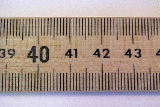
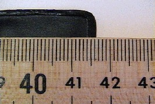
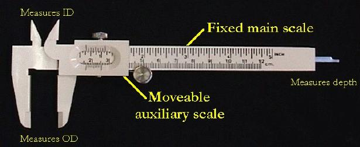
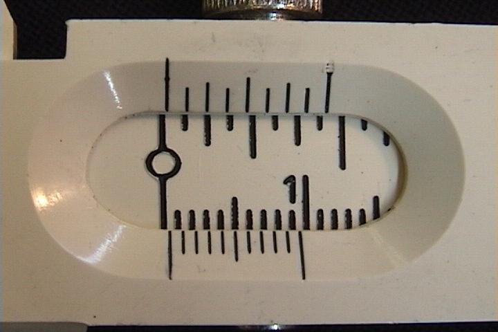

Physics Lab Tutorials
Physics is a quantitative science, relying on accurate measurements of
fundamental properties such as time, length, mass and temperature. To
ensure measurements of these properties are accurate and precise,
instruments such as meter sticks, Vernier calipers, micrometer calipers,
triple-beam balances and laboratory thermometers are often used. It is
important to understand how to properly use these devices. With any
measurement tool, the student should always try to achieve the greatest
accuracy the apparatus will allow.
Meter stick. The simplest way to measure length is to use an
ordinary meter stick. In the laboratory, our meter sticks are carefully
calibrated in centimeters with a millimeter least count. That is, the
millimeter is the smallest subdivision on the meter stick, which can be
seen in Figure 1. This means the millimeter is the unit of the smallest
reading that can be made without estimating.
|

|

|
|
Figure 1. This meter stick is calibrated in centimeters
(shown as the numbered major divisions) with a least count of
millimeters.
|
Figure 2. An example of a meter stick reading.
The object's length is measured to be 41.64 cm.
(See text for description.)
|
A measurement reading usually has one more significant figure than the
least count reading of the scale. The least count of our laboratory meter
sticks is 0.1cm and therefore a reading can be made to 0.01cm. Figure 2
above shows a meter stick being used to measure the length of a plastic strip.
The meter stick is calibrated in centimeters, so we know that the strip is
between 41 and 42 cm. The least count of this meter stick is one millimeter,
so we know with absolute certainty that the object is between 41.6 cm and 41.7 cm.
We then estimate the object's length to the fractional part (doubtful figure)
of the least count subdivision. In Figure 2, it we may estimate that the
strip is closer to 41.6 cm than it is to 41.7 cm and report the length to be
41.64 cm or 0.4164 m.
Vernier caliper. A vernier caliper (or vernier), shown in Figure 3, is a
common tool used in laboratories and industries to accurately determine the
fraction part of the least count division. The vernier is convenient when
measuring the length of an object, the outer diameter (OD) of a round or
cylindrical object, the inner diameter (ID) of a pipe, and the depth of a hole.
|

|
|
Figure 3. The vernier caliper. A common instrument
used to measure lengths, depths and diameters. (See text for description.)
|
When using a meter stick to measure length, for example, it is
necessary to estimate the measurement's final digit (tenths of a millimeter).
From the above example, the object's length was determined to be 0.4164 m,
but the final digit of that measurement is doubtful since that digit was
estimated. Unlike a meter stick, the vernier caliper allows the fractional
part of the smallest division to be accurately determined, not merely estimated.
The vernier consists of a main scale engraved on a fixed ruler and an
auxiliary scale engraved on a moveable jaw (see Figure 3). The
moveable jaw is free to slide along the length of the fixed ruler. The
main scale is calibrated in centimeters with the smallest division in
millimeters. The moveable auxiliary scale has 10 divisions that cover the
same distance as 9 divisions on the main scale. Therefore, the length of
the auxiliary scale is 9 mm. When the vernier is closed and properly zeroed
(see Figure 4), the first mark (zero) on the main scale is aligned with
the first mark on the auxiliary scale. The last mark on the auxiliary scale
will then coincide with the 9-mm mark on the main scale.
A reading is made by closing the jaws on the object to be measured.
Make a note of where the first mark on the auxiliary scale falls on
the main scale. In Figure 5, we see that the object's length is between
1.2 cm and 1.3 cm because the first auxiliary mark is between these two
values on the main scale. The last digit (tenths of a millimeter) is
found by noting which line on the auxiliary scale coincides with a mark on
the main scale. In our example, the last digit is 3 because the third
auxiliary mark lines up with a mark on the main scale. Therefore, the
length of the object is 1.23 cm.

|

|
|
Figure 4. With the jaws closed, this is what a properly
zeroed vernier caliper should look like. Click on the image
to enlarge it.
|
Figure 5. An example of a vernier reading. The object's
length is measured to be 1.23 cm. Click on the image
to enlarge it.
|
Care must be taken to insure that the vernier caliper is properly zeroed
(see Figure 4). (With misuse, it is possible that the vernier
will not read zero when the jaws are closed, thus leading to systematic errors.)
The vernier in Figure 6 is improperly zeroed. To correct this, a zero
correction must be made. A correction may be either positive or negative.
If the first mark on the auxiliary scale lies to the right of the main scale,
then the reading is too large and the error is positive. The zero reading in
Figure 6 is +0.05 cm and should be subtracted from any measurement reading.
Similarly, if the first mark on the auxiliary scale lies to the left of the main
scale zero-mark, then the error is negative and the correction should be
added from the measurement reading.
|

|
|
Figure 6. An improperly zeroed caliper. In this case,
the error is positive (+0.05 cm) and is to be subtracted from
the measurement reading. Click on the image
to enlarge it.
|
Triple-beam balance. The triple-beam balance, or laboratory balance,
measures the mass of an object by balancing the unknown mass with sliding
masses of known values. The triple-beam balance is usually calibrated in
grams with a least count of 0.1g. A measurement, then, can be made to 0.01g.
It is important to note that laboratory balances are used to make measurements
of an object's mass, not weight. (The weight of an object, as you will learn,
is the product of the object's mass, m, and the acceleration due to gravity,
g, or W = mg.)
Before the triple-beam balance is used to make a measurement,
verify that the balance is properly zeroed. Fine adjustments may
be made by turning the knob under the balance pan.
Graduated cylinder. The volume of an irregularly shaped object
may be determined with the use of a graduated cylinder. To do so, fill the
cylinder with water or other liquid and completely submerge the object in the
liquid. The volume of the object is measured by calculating the difference
in the water level before and after the object was submerged. Graduated
cylinders are usually calibrated in milliliters or cubic centimeters
(1ml = 1cc = 1cm3) but their least counts vary from 1ml to 10ml depending
on the size of the vessel.
Physics Lab Tutorials
If you have a question or comment ,send an email to Lab Coordinator:
Jerry Hester
|
|
|
|
|
|

Copyright © 2006. Clemson University.
All Rights Reserved.
Photo's Courtesy Corel Draw.
Last Modified on 01/27/2006 14:25:18.
|
|